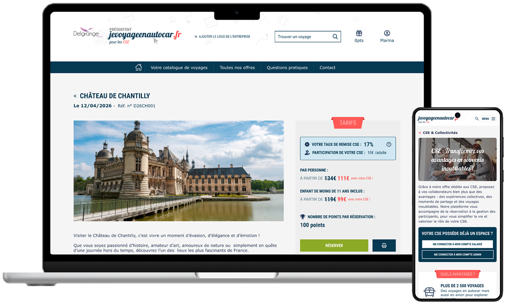
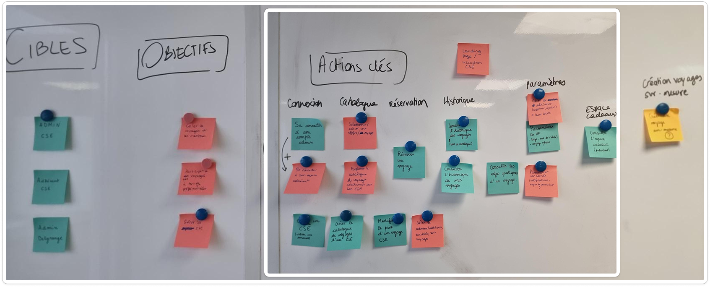
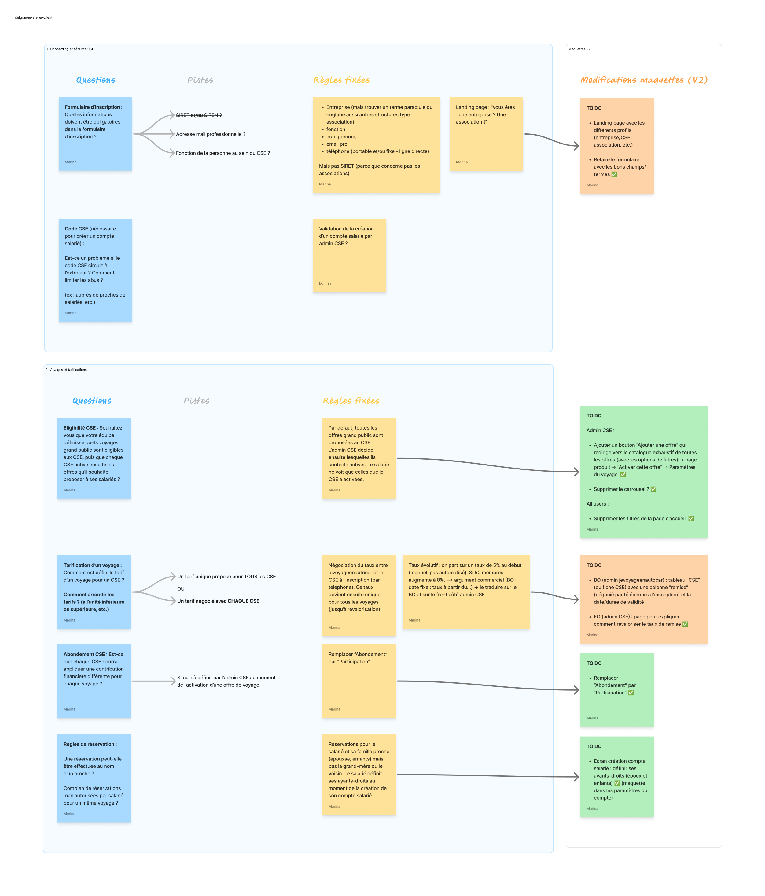
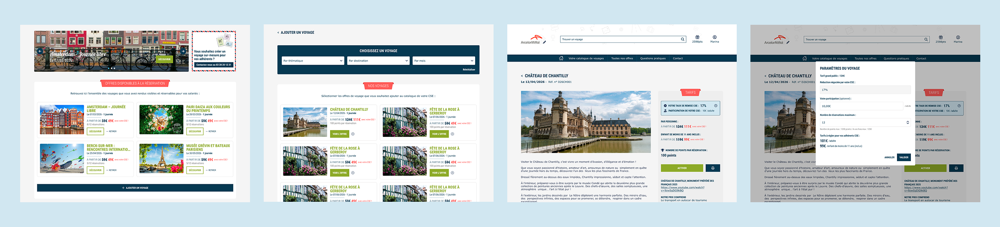
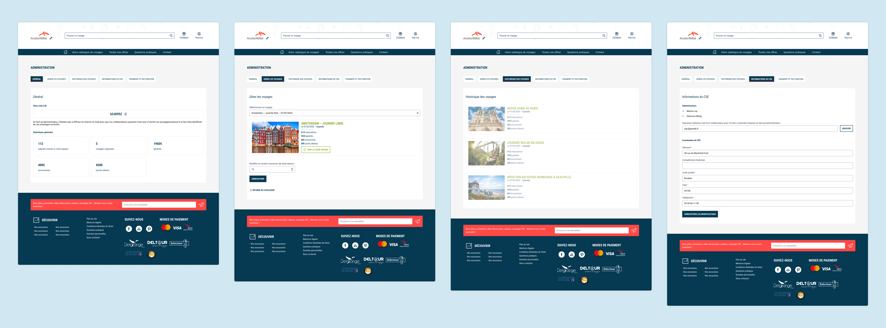

Delgrange Voyages
Conception d'un MVP dans le cadre du développement d'une nouvelle offre dédiée aux CSE.
Période : Mars - Avril 2026
Rôle : Product Designer (Ateliers ; Flux utilisateurs ; Prototypes)
Parties prenantes : Produit, Tech, Marketing, Direction
Delgrange Voyages est un acteur historique du tourisme dans le nord de la France, spécialisé à la fois dans le transport et l’organisation de voyages. Sa marque Jevoyageenautocar est son site de vente en ligne dédié spécifiquement à son activité de voyagiste en autocar.
Objectif : Concevoir le MVP d'une plateforme dédiée aux Comités Sociaux et Économiques (CSE) pour diversifier le modèle B2C historique vers le B2B2C.
Enjeux business :
- Diversification des revenus : Passer d’un modèle B2C à un modèle B2B/B2B2C. L’enjeu est de réduire la dépendance à la saisonnalité du grand public en captant des volumes de réservations groupées.
- Scalabilité : Créer un outil de gestion (Back-Office) permettant aux équipes internes de paramétrer les offres CSE sans intervention technique.
- Modernisation : Digitaliser une offre traditionnellement gérée par PDF/téléphone pour offrir une autonomie totale aux élus et salariés.
L’approche a été centrée sur la co-conception pour aligner les besoins utilisateurs avec les contraintes métier complexes (tarification, quotas).
Définition du périmètre (MVP) :
- Ateliers UX : Identification des personas (Salarié, Admin CSE, Admin métier) et priorisation des fonctionnalités clés (User Flows).
- Ateliers métier : Définition des règles de gestion (logique de remise, gestion des stocks de sièges, systèmes de récompenses) avec la direction et le marketing.


Décisions structurantes
- Acquisition : Création d’une landing page dédiée avec tunnel d'inscription B2B pour transformer les prospects CSE.
- Expérience différenciée : Hybridation des parcours existants avec des modules spécifiques pour les admins CSE (activation d'offres, suivi de facturation, catalogue cadeaux).
- Efficience technique : Utilisation d'un Design System existant (gabarits et composants UI) pour garantir la cohérence de marque et réduire les coûts de développement.
[Admin CSE] Parcours d'activation d'une offre :

[Admin CSE] Gestion des voyages et administration :

Tests d'utilisabilité sur prototype haute fidélité (Figma) auprès d'un panel d'élus CSE et de salariés.
Efficience de gestion
100% des administrateurs CSE testés ont réussi à activer une offre et à télécharger leur facture en moins de 2 minutes, validant la clarté du tableau de bord.
Réduction de la charge mentale
Le tunnel de réservation salarié a obtenu un score d'utilisabilité élevé (SUS Score estimé à 85/100), les utilisateurs soulignant la simplicité d'accès aux tarifs préférentiels.